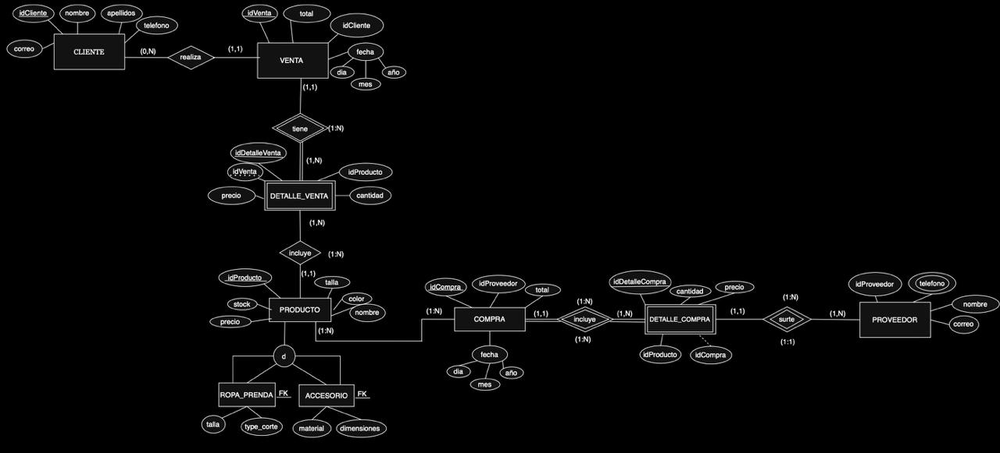
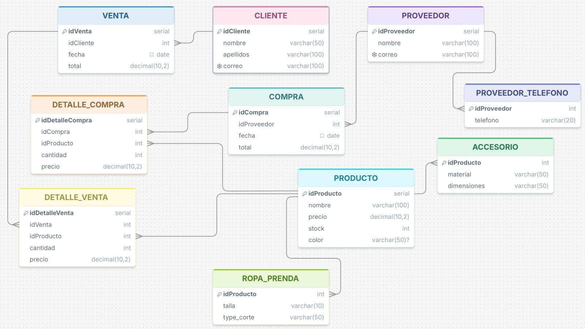

El sistema soluciona la gestión integral de una boutique, abarcando el control de inventarios, registro de clientes, proveedores, administración de compras, ventas y la jerarquía especializada de productos en accesorios y prendas de ropa.
Diagrama Entidad-Relación Extendido del diseño conceptual:

Representación del modelo relacional transformado:
